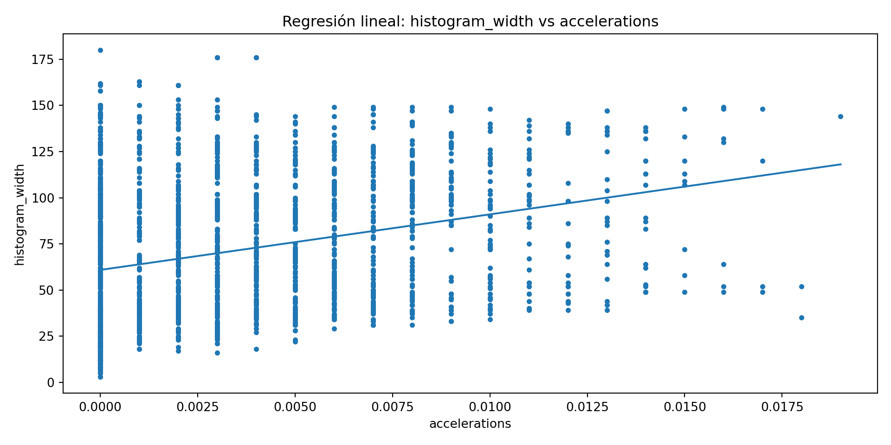
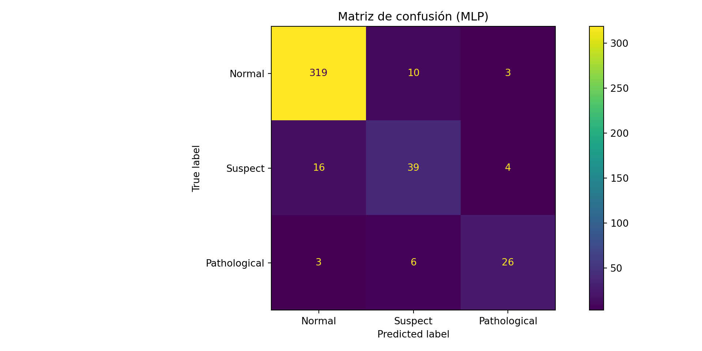

Descenso de Gradiente en Ciencias Biomédicas
Regresión lineal múltiple y regresión logística
PhD. Pablo Eduardo Caicedo Rodríguez
2025-11-01
Objetivos de aprendizaje
- Comprender los fundamentos de la Regresión Lineal, Regresión Logística y Perceptrón Multicapa (MLP).
- Aplicar estos modelos al contexto de salud fetal con datos de cardiotocografía (CTG).
- Evaluar el desempeño con métricas adecuadas (MSE, AUC/Log-Loss, matriz de confusión, F1).
- Regresión Lineal
- Regresión Logística
- Perceptrón Multicapa
- Cierre y discusión
Dataset: fetal_health.csv (UCI CTG). Contexto clínico: interpretación de CTG (normal, sospechoso, patológico).
Contexto clínico (CTG)
Defición
Prueba médica que monitoriza simultáneamente la frecuencia cardíaca del feto y la actividad contráctil del útero. Se realiza generalmente durante el tercer trimestre del embarazo y el parto, colocando dos transductores externos (uno para la frecuencia cardíaca fetal y otro para las contracciones) sobre el abdomen de la madre
Contexto clínico (CTG)
| Característica (Variable en CSV) | Cálculo o Descripción |
|---|---|
| Parámetros Basales | |
| baseline value | Es la frecuencia cardíaca fetal (FCF) media aproximada en un segmento de 10 minutos, excluyendo aceleraciones, deceleraciones y períodos de variabilidad marcada (>25 lpm). Se redondea a incrementos de 5 latidos por minuto (lpm).[4, 5, 6, 7, 8] El rango normal se considera entre 110 y 160 lpm.[9, 10] |
| fetal_movement | Número de movimientos fetales detectados por segundo.[1, 11, 12] |
| uterine_contractions | Número de contracciones uterinas por segundo. Se considera normal tener 5 o menos contracciones en 10 minutos.[1, 4, 11, 12] |
| Eventos Transitorios (Aceleraciones y Deceleraciones) | |
| accelerations | Número de aceleraciones por segundo. Una aceleración es un aumento abrupto de la FCF por encima de la línea de base de al menos 15 lpm, que dura 15 segundos o más, pero menos de 2 minutos.[5, 9, 10] |
| light_decelerations | Número de deceleraciones leves por segundo. Una deceleración es una caída de la FCF de más de 15 lpm que dura más de 15 segundos.[5] La categoría “leve” se refiere a su duración, típicamente menor a 120 segundos.[3] |
| severe_decelerations | Número de deceleraciones severas por segundo. Se refiere a deceleraciones de larga duración, a menudo definidas como aquellas que superan los 300 segundos.[3] |
| prolongued_decelerations | Número de deceleraciones prolongadas por segundo. Son caídas de la FCF que duran más de 2 o 3 minutos pero menos de 10 minutos.[3, 6, 13] |
| Variabilidad de la FCF | |
| abnormal_short_term_variability | Porcentaje de tiempo en que la variabilidad a corto plazo (latido a latido) es anormal. La variabilidad se considera anormal si es mínima (≤5 lpm) o marcada (>25 lpm).[6, 8] |
| mean_value_of_short_term_variability | Valor medio de la variabilidad a corto plazo (STV), que describe las fluctuaciones de la FCF latido a latido.[3, 6] |
| percentage_of_time_with_abnormal_long_term_variability | Porcentaje de tiempo en que la variabilidad a largo plazo es anormal. Se calcula sobre las fluctuaciones de la FCF en un período de un minuto.[5] |
| mean_value_of_long_term_variability | Valor medio de la variabilidad a largo plazo (LTV), que mide la amplitud (diferencia entre el pico y el valle) de las fluctuaciones de la FCF en un minuto.[3, 5] |
| Características del Histograma de FCF | Estas son propiedades estadísticas calculadas a partir de la distribución de todos los valores de FCF registrados durante el período de monitorización.[1, 11, 12] |
| histogram_width | El ancho del histograma, calculado como la diferencia entre el valor máximo (histogram_max) y el mínimo (histogram_min) de la FCF. |
| histogram_min | El valor mínimo de la FCF registrado en el histograma. |
| histogram_max | El valor máximo de la FCF registrado en el histograma. |
| histogram_number_of_peaks | El número de picos en la distribución del histograma. |
| histogram_number_of_zeroes | El número de “ceros” o bins con frecuencia cero en el histograma. |
| histogram_mode | El valor de FCF que aparece con mayor frecuencia (la moda estadística). |
| histogram_mean | El valor medio de la FCF en el histograma (la media estadística). |
| histogram_median | El valor central de la FCF en el histograma (la mediana estadística). |
| histogram_variance | La varianza de los valores de FCF, que mide su dispersión alrededor de la media. |
| histogram_tendency | Indica la simetría o sesgo del histograma. Puede interpretarse como: 1 para tendencia a la derecha (positiva), -1 para tendencia a la izquierda (negativa) y 0 para una distribución simétrica. |
Contexto clínico (CTG)
- CTG registra FCF y contracciones uterinas.
- Clasificación clínica (FIGO): normal / sospechoso / patológico.
- Variabilidad, aceleraciones y desaceleraciones son claves.
Regresión Lineal
Idea clave
Aproxima una relación lineal \(\hat{y} = \beta_0 + \sum_j \beta_j x_j\)minimizando MSE.
Ejemplo didáctico (CTG)
Usamos una variable continua de CTG como respuesta (p. ej., histogram_width) para ilustrar ajuste y residuales.
Discusión: supuestos (linealidad, homocedasticidad, independencia), diagnóstico con residuales.
Regresión Logística
Idea clave
Modela \(P(Y=1 \mid \mathbf{x}) = \sigma(\beta_0 + \mathbf{x}^\top \beta)\) con sigmoide \(\sigma(z)=1/(1+e^{-z})\).
1. Definición de Regresión Logística
La Regresión Logística es un algoritmo de aprendizaje automático supervisado utilizado fundamentalmente para problemas de clasificación binaria.
A pesar de su nombre, su objetivo no es predecir un valor continuo, sino modelar la probabilidad (\(P\)) de que una observación pertenezca a una clase específica (usualmente denotada como \(Y=1\)).
El modelo toma variables de entrada (features) \(x_1, \dots, x_n\) y estima \(P(Y=1 | \mathbf{x})\).
2. El Mecanismo Central del Modelo
El modelo logístico opera en dos pasos cruciales:
2.1. El Componente Lineal (Logit)
Primero, el modelo calcula una suma ponderada de las entradas, exactamente igual que en una regresión lineal. A este resultado (\(z\)) se le conoce como logit o, más formalmente, log-odds.
\[ z = \beta_0 + \beta_1 x_1 + \beta_2 x_2 + \dots + \beta_n x_n \]
- \(\beta_0\) es el intercepto (sesgo).
- \(\beta_{1 \dots n}\) son los coeficientes (pesos) que el modelo aprende.
- El rango de salida de \(z\) es el de todos los números reales: \((-\infty, +\infty)\).
2.2. La Función Sigmoide (Logística)
Dado que una probabilidad debe estar en el rango \([0, 1]\), \(z\) no puede ser el resultado final. La regresión logística aplica la función sigmoide (\(\sigma\)) a \(z\) para “aplastar” (squash) la salida lineal al rango de probabilidad.
\[ P = \sigma(z) = \frac{1}{1 + e^{-z}} \]
- Si \(z \to +\infty\), \(e^{-z} \to 0\), y \(P \to 1\).
- Si \(z \to -\infty\), \(e^{-z} \to +\infty\), y \(P \to 0\).
- Si \(z = 0\), \(e^{-0} = 1\), y \(P = 0.5\).
3. La Relación Clave: Probabilidad y Log-Odds
El concepto central que conecta el modelo lineal con la probabilidad es el log-odds. Esta transformación es necesaria para mapear un espacio acotado \([0, 1]\) a un espacio no acotado \([-\infty, +\infty]\).
3.1. De Probabilidad a Log-Odds
La transformación se realiza en dos pasos:
- Probabilidad (\(P\)): La probabilidad del evento.
- Rango: \([0, 1]\)
- Odds (Momios): La razón entre la probabilidad de que ocurra (\(P\)) y la de que no ocurra (\(1-P\)). \[
Odds = \frac{P}{1-P}
\]
- Rango: \([0, +\infty]\)
- Log-Odds (Logit): El logaritmo natural de los odds. \[
Logit(P) = \ln(Odds) = \ln\left(\frac{P}{1-P}\right)
\]
- Rango: \([-\infty, +\infty]\)
El modelo de regresión logística es, por tanto, un modelo lineal que predice el log-odds:
\[ z = \ln\left(\frac{P}{1-P}\right) = \beta_0 + \beta_1 x_1 + \dots + \beta_n x_n \]
3.2. De Log-Odds a Probabilidad (La Inversa)
Para obtener la probabilidad \(P\) a partir del log-odds \(z\), simplemente revertimos la transformación Logit. Este proceso de despejar \(P\) de la ecuación del logit da origen a la función sigmoide:
Ecuación base: \[ z = \ln\left(\frac{P}{1-P}\right) \]
Aplicar exponencial (inversa del logaritmo): \[ e^z = \frac{P}{1-P} \]
Despejar \(P\): \[ e^z (1-P) = P \] \[ e^z - e^z P = P \] \[ e^z = P + e^z P \] \[ e^z = P (1 + e^z) \]
Probabilidad \(P\) en función de \(z\): \[ P = \frac{e^z}{1 + e^z} \]
Forma sigmoide alternativa (dividiendo numerador y denominador por \(e^z\)): \[ P = \frac{e^z/e^z}{(1 + e^z)/e^z} = \frac{1}{e^{-z} + 1} = \frac{1}{1 + e^{-z}} \]
4. Interpretación de Coeficientes
Debido a esta relación, los coeficientes (\(\beta_i\)) del modelo tienen una interpretación específica:
- Coeficiente \(\beta_i\): Un incremento de una unidad en la variable \(x_i\) (manteniendo las demás constantes) genera un cambio de \(\beta_i\) en el log-odds de la predicción.
- Odds Ratio (OR): Para una interpretación más intuitiva, se utiliza \(e^{\beta_i}\). Un incremento de una unidad en \(x_i\) multiplica los odds por un factor de \(e^{\beta_i}\).

Clasificación binaria (Normal vs No‑Normal)
precision recall f1-score support
0 0.778 0.745 0.761 94
1 0.929 0.940 0.934 332
accuracy 0.897 426
macro avg 0.853 0.842 0.848 426
weighted avg 0.895 0.897 0.896 426
Redes Neuronales
1. El Punto de Partida: Regresión Lineal
El problema de regresión estándar busca encontrar una función \(f\) que mapee entradas \(\mathbf{x}\) a una salida \(y\).
En la Regresión Lineal, asumimos que la relación es lineal:
\[ y = \beta_0 + \beta_1 x_1 + \beta_2 x_2 + \dots + \beta_n x_n + \epsilon \] O en forma vectorial: \[ y = \mathbf{w}^T \mathbf{x} + b \]
- Objetivo: Encontrar los parámetros óptimos (\(\mathbf{w}, b\)) que minimizan una función de pérdida (ej. Error Cuadrático Medio, MSE).
- Limitación: El modelo está restringido a representar únicamente relaciones lineales.
2. Primera Generalización: El GLM
¿Qué pasa si la salida no es lineal o no sigue una distribución normal? (Ej. clasificación binaria).
Usamos un Modelo Lineal Generalizado (GLM), como la Regresión Logística:
Predictor Lineal (\(z\)): Mantenemos el núcleo lineal. \[ z = \mathbf{w}^T \mathbf{x} + b \] El resultado \(z\) (el logit) puede ir de \((-\infty, +\infty)\).
Función de Enlace (Inversa): Aplicamos una transformación no-lineal \(g^{-1}\) para mapear \(z\) al rango deseado (ej. \([0, 1]\) para probabilidad). \[ \hat{y} = g^{-1}(z) = \sigma(z) = \frac{1}{1 + e^{-z}} \]
- Avance: Hemos generalizado la regresión. El modelo sigue siendo lineal en sus parámetros \(\mathbf{w}\), pero puede modelar fenómenos no lineales mediante una función de activación (la sigmoide).
3. La Neurona: Una Unidad de Regresión
Una neurona artificial (o Perceptrón) es conceptualmente idéntica a un modelo de regresión logística (un GLM).
Agregación Lineal: Calcula el predictor lineal \(z\) (la entrada neta). \[ z = \sum_{i=1}^n w_i x_i + b \]
Función de Activación: Aplica una transformación no-lineal \(a\) (la salida). \[ a = g(z) \]
- \(g(z)\) puede ser \(\text{sigmoid}(z)\), \(\tanh(z)\), \(\text{ReLU}(z)\), etc.
- Concepto Clave: Una sola neurona es una unidad de regresión (lineal o generalizada) que aprende un único límite de decisión (o una respuesta lineal).
4. La Red: Composición de Funciones
¿Cómo modelar relaciones altamente complejas que una sola neurona no puede capturar?
Respuesta: Apilando las neuronas en capas.
La salida de una capa de “unidades de regresión” se convierte en la entrada de la siguiente capa.
\[ \text{Capa 1 (Oculta): } \mathbf{a}^{(1)} = g_1(\mathbf{W}^{(1)}\mathbf{x} + \mathbf{b}^{(1)}) \] \[ \text{Capa 2 (Salida): } \hat{y} = g_2(\mathbf{W}^{(2)}\mathbf{a}^{(1)} + \mathbf{b}^{(2)}) \]
Esto es una composición de funciones anidada:
\[ \hat{y} = g_2\left( \mathbf{W}^{(2)} \left( g_1(\mathbf{W}^{(1)}\mathbf{x} + \mathbf{b}^{(1)}) \right) + \mathbf{b}^{(2)} \right) \]
5. El Teorema de Aproximación Universal
Esta arquitectura de “regresiones apiladas” tiene una propiedad fundamental:
Teorema de Aproximación Universal: Una red neuronal feedforward con una sola capa oculta (con una función de activación no lineal, como ReLU o Sigmoide) puede aproximar cualquier función continua \(f(\mathbf{x})\) a un grado arbitrario de precisión, dado un número suficiente de neuronas.
- Una regresión lineal solo puede encontrar la mejor línea.
- Una red neuronal puede encontrar (aprender) la función \(f(\mathbf{x})\) en sí misma, sin importar su forma.
La red neuronal es un regresor generalizado en el sentido más amplio.
6. Generalización del Aprendizaje (Optimización)
El proceso de “entrenamiento” también es una generalización de la regresión.
Regresión (Lineal/Logística)
- Pérdida: Se define una función de coste (Loss Function) \(L(y, \hat{y})\).
- Ej. MSE: \(L = (y - \hat{y})^2\)
- Ej. Cross-Entropy: \(L = -[y \log(\hat{y}) + (1-y) \log(1-\hat{y})]\)
- Optimización: Se encuentran los \(\mathbf{w}\) y \(b\) que minimizan \(L\) (a menudo usando Descenso de Gradiente).
Red Neuronal
- Pérdida: Se define la misma función de coste \(L(y, \hat{y})\) en la salida final.
- Optimización: Se encuentran todos los \(\mathbf{W}^{(l)}\) y \(\mathbf{b}^{(l)}\) de todas las capas que minimizan \(L\).
- Mecanismo: Descenso de Gradiente + Backpropagation (Retropropagación).
- Backpropagation es simplemente la aplicación sistemática de la regla de la cadena del cálculo para encontrar el gradiente de \(L\) con respecto a cada peso en la vasta función compuesta.
7. Conclusión: La Red como \(f_{\theta}(\mathbf{x})\)
- Regresión Lineal:
- Modelo: \(f(\mathbf{x}) = \mathbf{w}^T \mathbf{x} + b\)
- Asume una forma funcional fija (lineal).
- GLM (Logística):
- Modelo: \(f(\mathbfx) = g(\mathbf{w}^T \mathbf{x} + b)\)
- Asume una forma fija (lineal) transformada por una activación fija (ej. sigmoide).
- Red Neuronal (MLP):
- Modelo: \(f(\mathbf{x}) = f_L(\dots f_2(f_1(\mathbf{x}))\dots)\)
- No asume una forma funcional fija.
- Es un aproximador de funciones universal cuyos parámetros \(\theta\) (todos los \(W\) y \(b\)) se aprenden para que \(f_{\theta}(\mathbf{x})\) imite la verdadera función subyacente \(f(\mathbf{x})\) en los datos.
La red neuronal es la generalización última de la regresión: un sistema que aprende la forma de la función desde los datos.
Perceptrón Multicapa — MLP
Arquitectura propuesta: 21→32→16→3 con ReLU y softmax para 3 clases \((1,2,3)\).
Entrenamiento (multiclase)
<sklearn.metrics._plot.confusion_matrix.ConfusionMatrixDisplay object at 0x7f4e493aba10>
Macro-F1: 0.8003850715462932Notas didácticas: desequilibrio de clases (SMOTE), métricas por clase (F1), validación cruzada, early stopping.
Cierre y recomendaciones
- La interpretación clínica sigue siendo esencial; el ML complementa, no reemplaza, el juicio médico.
- Validar externamente (dominios LMIC vs HIC), sesgos de muestreo y data shift.
- Reportar métricas por clase, especialmente la clase sospechosa.
Referencias (DOI / ISBN)
- Ayres‑de‑Campos D, et al. FIGO consensus guidelines on intrapartum fetal monitoring: Cardiotocography. Int J Gynaecol Obstet 2015;131(1):13–24. DOI: 10.1016/j.ijgo.2015.06.020
- Macones GA, et al. The 2008 NICHD workshop report on electronic fetal monitoring. J Obstet Gynecol Neonatal Nurs 2008. (see Obstet Gynecol 2008;112:661–6)
- Hoodbhoy Z, et al. Use of Machine Learning Algorithms for Prediction of Fetal Risk using Cardiotocographic Data. Int J Appl Basic Med Res 2019;9:226–230. DOI: 10.4103/ijabmr.IJABMR_370_18
- James G, Witten D, Hastie T, Tibshirani R. An Introduction to Statistical Learning (2nd ed.). Springer, 2021. DOI: 10.1007/978-1-0716-1418-1
- Hosmer DW, Lemeshow S, Sturdivant RX. Applied Logistic Regression (3rd ed.). Wiley, 2013. DOI: 10.1002/9781118548387
- Rumelhart DE, Hinton GE, Williams RJ. Learning representations by back‑propagating errors. Nature 1986;323:533–536. DOI: 10.1038/323533a0
- Goodfellow I, Bengio Y, Courville A. Deep Learning. MIT Press, 2016. ISBN: 978‑0262035613
Apéndice · Carga de datos y EDA mínimo
fetal_health
1.0 1655
2.0 295
3.0 176
Name: count, dtype: int64 count ... max
baseline value 2126.0 ... 160.000
accelerations 2126.0 ... 0.019
fetal_movement 2126.0 ... 0.481
uterine_contractions 2126.0 ... 0.015
light_decelerations 2126.0 ... 0.015
severe_decelerations 2126.0 ... 0.001
prolongued_decelerations 2126.0 ... 0.005
abnormal_short_term_variability 2126.0 ... 87.000
mean_value_of_short_term_variability 2126.0 ... 7.000
percentage_of_time_with_abnormal_long_term_vari... 2126.0 ... 91.000
mean_value_of_long_term_variability 2126.0 ... 50.700
histogram_width 2126.0 ... 180.000
histogram_min 2126.0 ... 159.000
histogram_max 2126.0 ... 238.000
histogram_number_of_peaks 2126.0 ... 18.000
histogram_number_of_zeroes 2126.0 ... 10.000
histogram_mode 2126.0 ... 187.000
histogram_mean 2126.0 ... 182.000
histogram_median 2126.0 ... 186.000
histogram_variance 2126.0 ... 269.000
histogram_tendency 2126.0 ... 1.000
fetal_health 2126.0 ... 3.000
[22 rows x 8 columns]Descenso de Gradiente en Ciencias Biomédicas – PECR Knowledge Hub Descenso de Gradiente en Ciencias Biomédicas – PECR Knowledge Hub Descenso de Gradiente en Ciencias Biomédicas – PECR Knowledge Hub PECR Knowledge Hub Regresión lineal múltiple y regresión logística Regresión lineal múltiple y regresión logística